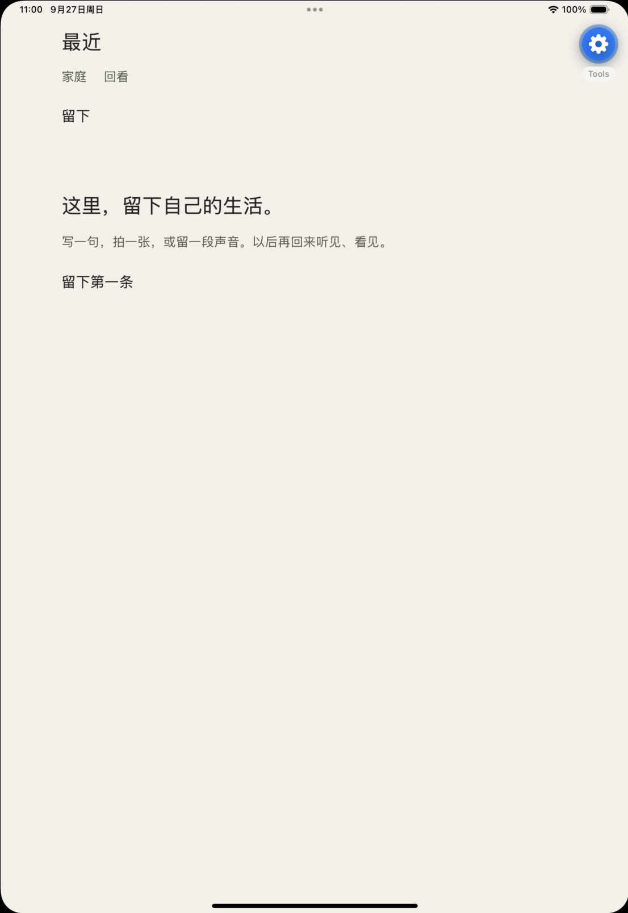
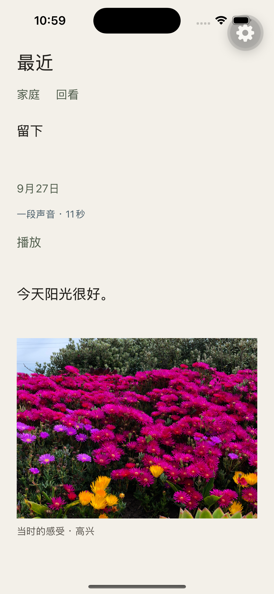
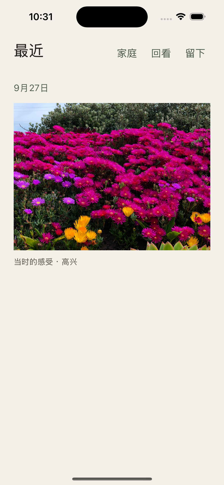
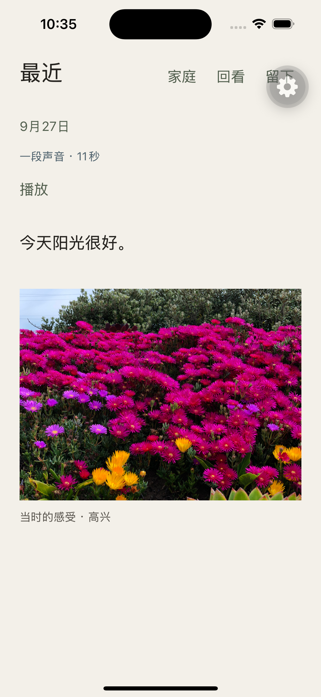
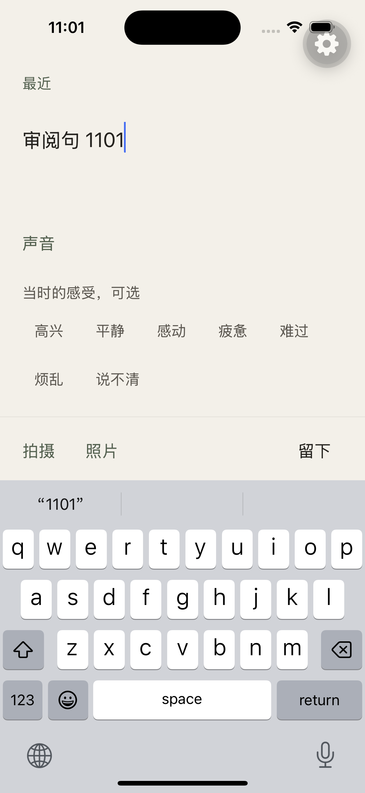
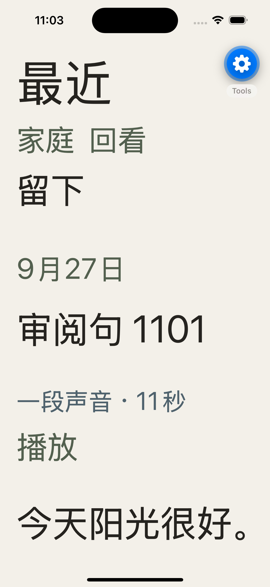
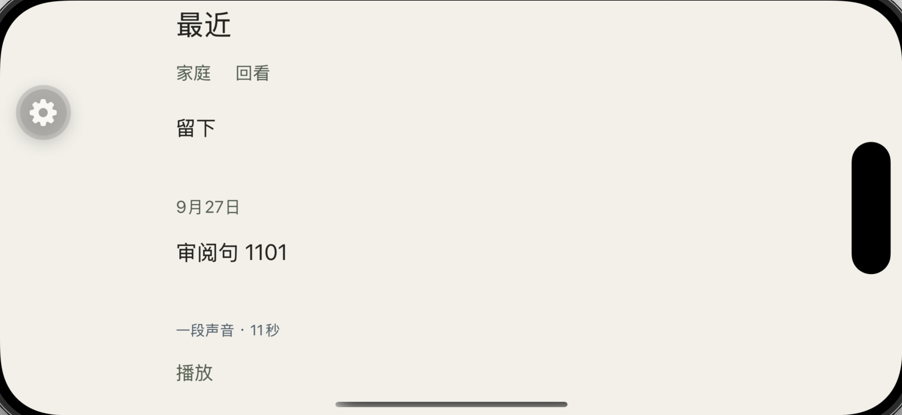
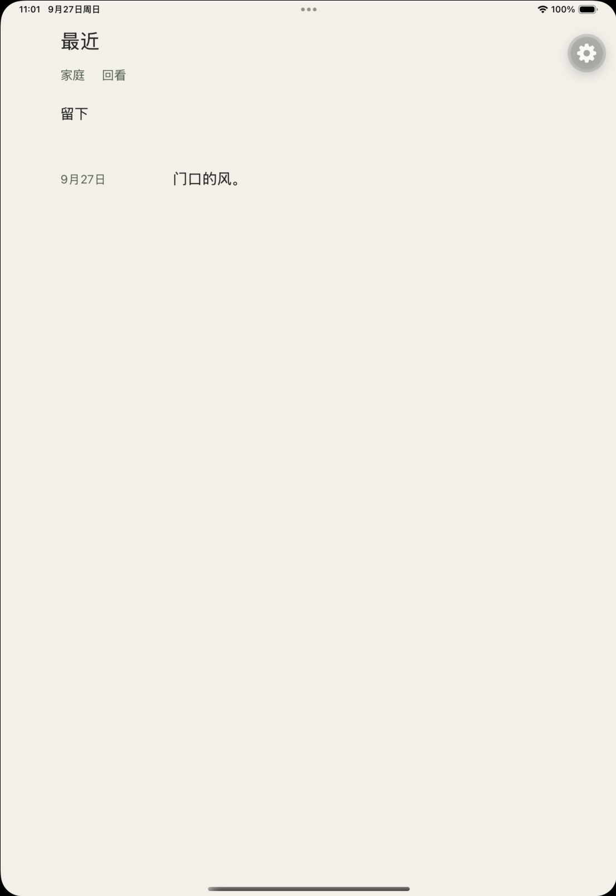

左列是 storyboard.html 里的版面规则示意。 右列是 iPhone 16 / iPad Pro 11 模拟器里、用真实留下内容截的屏。 不是整 App UI 完成。真机 Liuz17 未走完。
写一句，拍一张，或留一段声音。以后再回来听见、看见。
示意 · 首次使用

实机 · iPhone 16 · 首次空白
门口的风
同一天的第二句
示意 · 日期只出现一次

实机 · 今天阳光很好 + 花田照片，共享 9月27日
窗台上的光
示意 · 灰色块不是用户图

实机 · 模拟器相册花田原图 · 高兴
当时的雨
示意 · 一段声音

实机 · 留下页录了 11 秒 · 播放
当时的感受，可选
示意 · 底栏贴在键盘上沿

实机 · 拍摄 / 照片 / 留下在键盘上方
今天阳光很好。
示意 · 顶栏可换行，不缩小倍率

实机 · accessibility-extra-large
横屏时顶距收紧，内容可滚动。不当成平板日期轨。
示意 · 短高度手机页

实机 · iPhone 16 横屏 · 阅读柱 520，无日期轨
门口的风
同一天的第二句
示意 · 日期轨 120 + 阅读柱 520

实机 · iPad Pro 11 · 日期轨 + 520 阅读柱